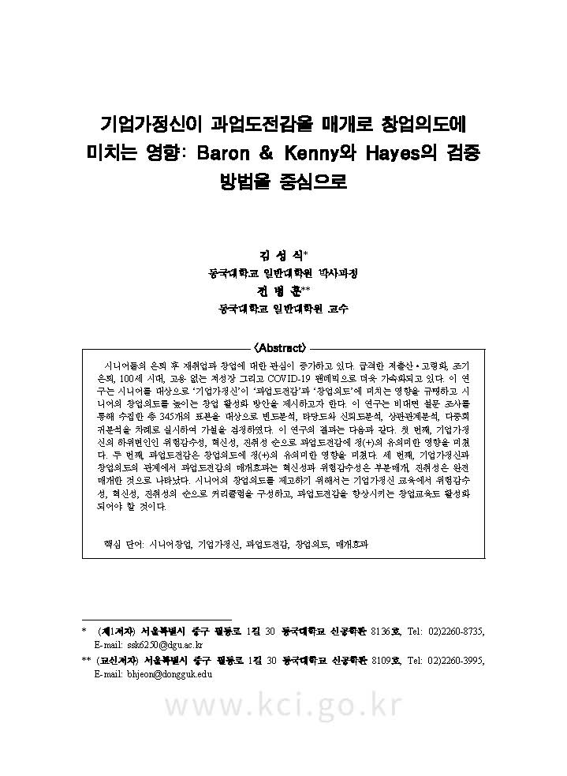

한국창업학회지(Journal of the Korean Entrepreneurship Socieity)
자기효능감이 창업의도에 미치는 영향에 관한 연구: 기업가정신과 실패두려움의 이중매개효과 및 창업교육의 조절효과
KCI
벤처창업연구(Asia-Pacific Journal of Business Venturing and Entrepreneurship)
창업지원정책이 창업성과에 미치는 영향에 관한 메타분석.

KCI
신용카드리뷰(The Credit Card Review)
기업가정신이 과업도전감을 매개로 창업의도에 미치는 영향: Baron & Kenny와 Hayes의 검증 방법을 중심으로 = The Effect of Entrepreneurship on Entrepreneurship Intention by Mediating Goal Difficulty: Focusing on the Verification Method of Baron & Kenny and Hayes
학위논문(박사)
동국대학교 일반대학원
시니어 창업의도에 미치는 영향요인에 관한 연구 : 체계적 문헌고찰, 메타분석 그리고 실증분석 = A Study on Factors Affecting Senior Entrepreneurship Intention: Systematic review, meta-analysis, and empirical analysis
학위논문(석사)
한성대학교 지식서비스&컨설팅대학원
중소 컨설팅사의 특성요인이 경영성과에 미치는 영향에 관한 실증연구 : 컨설턴트 특성의 조절효과를 중심으로 = An empirical Study on the Influence of Characteristics of Small and Medium-sized Consulting Company on Business Performance: Focused on the Moderation Effect of Consultant’s Characteristics
Conferences
한국창업학회 Conferences
시니어 창업역량이 기술창업의도에 미치는 영향 : 자기효능감과 기업가정신의 이중매개효과와 창업지원정책의 조절효과